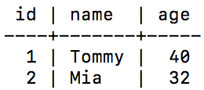
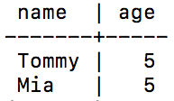
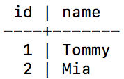

RETURNING
RETURNING works with PostgreSQL but may not be compatable with others database systems.
The following table will be used to provide examples.
CREATE TABLE people(
id SERIAL2 PRIMARY KEY,
name VARCHAR(255),
age INT2
);
The key word keyword RETURNING can be used with INSERT, UPDATE and DELETE statments to return a table of the altered rows.
INSERT INTO people (name, age) VALUES ('Tommy', 40), ('Mia', 32) RETURNING *;
UPDATE people SET age = 5 RETURNING name, age;
DELETE FROM people RETURNING id, name;
The returned table may also be used in statments.
WITH new_people AS (
INSERT INTO people (name, age)
VALUES
('Tommy', 40),
('Mia', 32)
RETURNING *
) SELECT * FROM new_people WHERE age = 32;
(Sources:
PostgreSQL docs: Returning Data From Modified Rows
PostgreSQL docs: INSERT
)
Updated: 11/06/2017